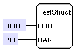

FORTE provides support for structured datatypes STRUCT. Thus the encapsulation of data, which belongs together, is possible and the engineering is facilitated. Currently STRUCT datatypes have to be implemented in FORTE, since there are no export-filters. Based on the Compliance Profile for Feasibility Studies only the unique ASN1-tag of the STRUCT-datatype is used for encoding. Therefore the ASN1-tag has to be set to the same value on all devices that exchange STRUCT-datatypes over the network! For testing and documentation purposes a sample datatype is provided:
The definition file TestStruct.dtp is included in 4DIAC-LIB. The according implementation FORTE_TestStruct.cpp and FORTE_TestStruct.h is provided in the module test of FORTE.
Caution: the ASN1-tag provided in the dtp-file has to match the typeID provided in the constructor of the implementation of the datatype.
leads to
Go back to Development index:
If you want to go back to the Start Here page, we leave you here a fast access
Or Go to top